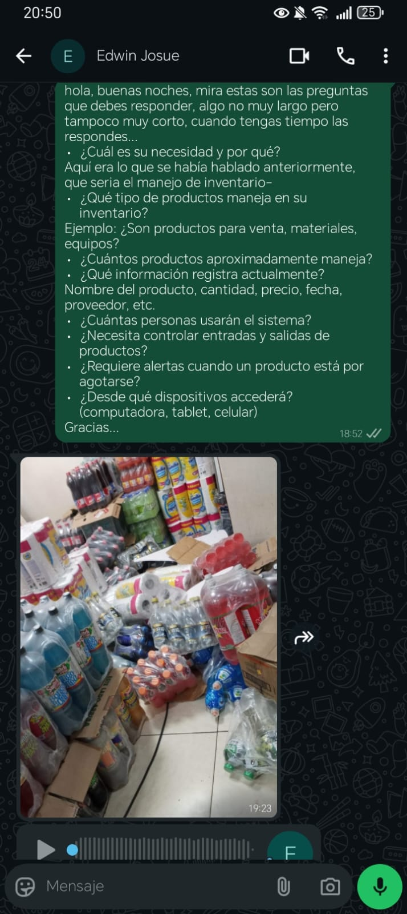
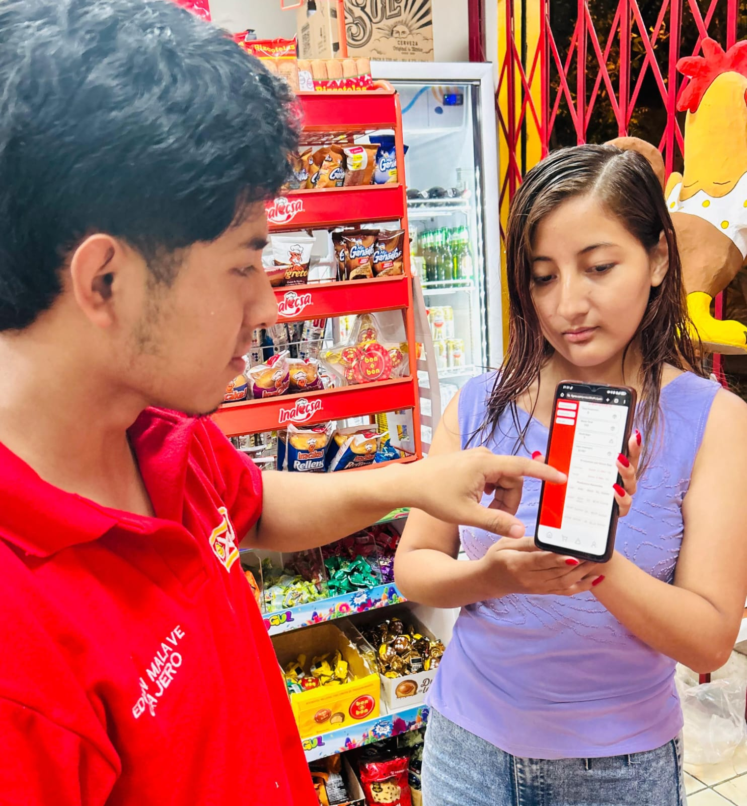

Aplicar todo el proceso de desarrollo de software, desde el contacto con el cliente hasta la aprobación del diseño en Figma, integrando todos los conocimientos en un proyecto completo.
En esta fase se establece el primer contacto con el cliente para entender su necesidad y el problema que desea resolver.
Edwin Malavé - Cajero de Oxxo
Día 29/12/2025 - Reunión virtual - Duración: 45 minutos
El cliente necesita un sistema digital para gestionar el inventario porque actualmente lo realiza de forma manual, lo cual es lento, propenso a errores y dificulta el control de stock. Requiere automatizar el registro de productos, entradas y salidas para mejorar la eficiencia operativa y tener información actualizada en tiempo real.
1. ¿Qué tipo de productos maneja en su inventario?
2. ¿Cuántos productos aproximadamente maneja?
3. ¿Qué información registra actualmente?
4. ¿Cuántas personas usarán el sistema?
5. ¿Necesita controlar entradas y salidas de productos?
6. ¿Requiere alertas cuando un producto está por agotarse?
7. ¿Desde qué dispositivos accederá? (computadora, tablet, celular)
Aquí se documentan todos los requisitos funcionales y no funcionales del sistema.
Cajeros/Empleados: Registran ventas y consultan stock disponible
Encargado de tienda: Gestiona entradas de productos, actualiza inventario y genera reportes
Administrador del sistema: Gestiona usuarios, configura el sistema y supervisa operaciones generales
1. Registro de productos: Agregar, editar y eliminar productos del catálogo
2. Control de stock: Visualizar cantidades disponibles en tiempo real
3. Registro de entradas: Documentar la recepción de mercancía nueva
4. Registro de salidas: Registrar ventas y mermas
5. Alertas de stock bajo: Notificaciones cuando productos están por agotarse
6. Búsqueda de productos: Localizar productos rápidamente por nombre o código
- Generar reportes de inventario (diarios, semanales, mensuales)
- Historial de movimientos de productos
- Gestión de categorías de productos
- Registro de proveedores
- Dashboard con estadísticas visuales
- Sistema de respaldo de datos
1. Login/Inicio de sesión
2. Dashboard principal (resumen de inventario)
3. Listado de productos
4. Formulario de agregar/editar producto
5. Registro de entrada de mercancía
6. Registro de salida de mercancía
7. Alertas y notificaciones
8. Gestión de usuarios
Productos: Código de barras, nombre, descripción, categoría, precio de venta, precio de compra, stock actual, stock mínimo, proveedor, fecha de registro
Movimientos: Tipo de movimiento (entrada/salida), fecha y hora, cantidad, producto afectado, usuario que realizó el movimiento, comentarios
Usuarios: Nombre, usuario, contraseña (encriptada), rol, correo electrónico, fecha de creación
Proveedores: Nombre, contacto, teléfono, dirección
Se analizan los procesos y se crean diagramas para visualizar el funcionamiento del sistema.
Proceso 1 - Registro de producto nuevo:
1. Usuario accede a "Agregar producto"
2. Ingresa datos del producto (nombre, código, precio, stock inicial)
3. Sistema valida que no exista código duplicado
4. Sistema guarda el producto
5. Producto aparece en el inventario
Proceso 2 - Entrada de mercancía:
1. Usuario selecciona "Registrar entrada"
2. Busca o escanea el producto
3. Ingresa cantidad recibida
4. Sistema actualiza stock sumando la cantidad
5. Se registra el movimiento en el historial
Proceso 3 - Venta/Salida de producto:
1. Usuario registra venta
2. Busca o escanea el producto
3. Ingresa cantidad vendida
4. Sistema verifica que haya stock suficiente
5. Sistema reduce el stock
6. Si stock queda bajo el mínimo, genera alerta
1. Stock no puede ser negativo: El sistema no permite registrar salidas mayores al stock disponible
2. Códigos únicos: No pueden existir dos productos con el mismo código de barras
3. Alertas automáticas: Cuando un producto llega al stock mínimo, se genera una alerta automática
4. Permisos por rol: Solo el encargado y administrador pueden eliminar productos o editar precios
5. Registro de auditoría: Todo movimiento debe quedar registrado con usuario, fecha y hora
6. Precios válidos: Los precios deben ser mayores a cero
7. Stock mínimo: Cada producto debe tener definido un stock mínimo de seguridad
8. Sesión segura: Después de 30 minutos de inactividad, el sistema cierra sesión automáticamente
Caso de Uso 1 - Iniciar Sesión
Actor: Cualquier usuario del sistema
Precondición: Tener cuenta registrada
Flujo: 1) Usuario ingresa credenciales, 2) Sistema valida datos, 3) Sistema carga el rol del usuario, 4) Usuario accede al dashboard
Caso de Uso 2 - Registrar Producto Nuevo
Actor: Encargado o Administrador
Precondición: Estar autenticado y tener permisos
Flujo: 1) Usuario selecciona "Agregar producto", 2) Completa formulario, 3) Sistema valida datos, 4) Sistema guarda producto, 5) Producto aparece en lista
Caso de Uso 3 - Consultar Stock
Actor: Cajero, Encargado o Administrador
Precondición: Estar autenticado
Flujo: 1) Usuario busca producto, 2) Sistema muestra información del stock, 3) Usuario visualiza cantidad disponible
Caso de Uso 4 - Registrar Salida de Producto
Actor: Cajero, Encargado o Administrador
Precondición: Producto debe existir y tener stock suficiente
Flujo: 1) Usuario selecciona producto, 2) Ingresa cantidad, 3) Sistema valida stock, 4) Sistema actualiza inventario, 5) Sistema registra movimiento
Se crea el prototipo visual del sistema en Figma.
Boceto de las pantallas principales del sistema:
Dashboard: Diseñé una vista con tarjetas que muestran métricas clave (total de productos, productos con stock bajo, movimientos del día) y una tabla con los últimos productos registrados.
Gestión de productos: Boceto de una tabla con filtros de búsqueda, botones de acción (agregar, entrada, salida) y vista de detalles de cada producto.
Registro de movimientos: Pantalla simple con formulario para seleccionar producto, ingresar cantidad y tipo de movimiento (entrada/salida).
Colores: Se utilizó una paleta predominante en tonos rojos como color principal del sistema, aplicada en el menú lateral, encabezados y botones principales para dar fuerza visual y resaltar las acciones importantes. El color verde se emplea para indicar estados normales y entradas de productos, mientras que el color rojo se usa para alertas de stock bajo y salidas. Los fondos blancos y claros permiten una mejor lectura y organización de la información.
Tipografía: Se aplicó una tipografía sans serif moderna y legible, adecuada para interfaces móviles, permitiendo una lectura clara en listas de productos, tarjetas informativas y dashboards. Se diferencian títulos, subtítulos y texto mediante variaciones de tamaño y peso.
Botones: Los botones presentan un diseño con bordes redondeados y colores diferenciados según su función: rojo para acciones principales y de salida, verde para entradas y confirmaciones. Esto facilita la comprensión rápida de las acciones disponibles para el usuario.
Iconos: Se incorporaron iconos simples y claros en el menú, tarjetas y barra de navegación inferior para mejorar la experiencia de usuario y hacer la interfaz más intuitiva y visualmente comprensible.
Espaciado: El diseño mantiene un espaciado uniforme entre tarjetas, botones y secciones, logrando una interfaz ordenada, limpia y fácil de navegar en dispositivos móviles.
Diseñé un total de 4 pantallas principales en Figma:
1. Pantalla de inicio de sesión (Login), donde el usuario ingresa sus credenciales.
2. Dashboard principal, que muestra un resumen del inventario con métricas como productos totales, stock disponible y alertas de stock bajo.
3. Pantalla de inventario / productos, donde se visualiza la lista de productos con su código, stock actual, estado y opciones de entrada y salida.
4. Pantalla de alertas de stock, que notifica los productos con stock por debajo del mínimo y permite restablecer el inventario.
Estas pantallas fueron diseñadas con enfoque mobile-first, manteniendo una navegación clara y consistente entre secciones.
El prototipo incluye interacciones enfocadas en la usabilidad y claridad del sistema. Se implementaron acciones de navegación entre pantallas mediante el menú lateral y la barra de navegación inferior, permitiendo cambiar entre Dashboard, Productos y Alertas de forma intuitiva.
Los botones de acción como “Entrada”, “Salida”, “Agregar producto” y “Restablecer” cuentan con interacciones de clic que simulan el flujo real del sistema, llevando al usuario a la pantalla correspondiente o mostrando el cambio de estado del producto.
En la pantalla de alertas, se incluyó una interacción que permite identificar visualmente los productos con stock bajo mediante el uso de colores y tarjetas resaltadas, facilitando la toma de decisiones.
Las animaciones utilizadas son simples y funcionales, principalmente transiciones suaves entre pantallas para simular la navegación móvil, manteniendo una experiencia de usuario clara y sin sobrecargar la interfaz.
Tipo de aplicación: Aplicación web responsive (Progressive Web App - PWA) accesible desde cualquier navegador y dispositivo.
Frontend: React con TypeScript para crear una interfaz dinámica e interactiva. Tailwind CSS para estilos rápidos y consistentes.
Backend: Node.js con Express para crear una API REST que maneje las peticiones del frontend.
Base de datos: PostgreSQL para almacenar productos, movimientos, usuarios y proveedores de forma estructurada y relacional.
Autenticación: JWT (JSON Web Tokens) para manejar sesiones de usuario de forma segura.
Hosting: Frontend en Vercel/Netlify, Backend y BD en Railway o Render (servicios gratuitos o económicos).
Arquitectura: Cliente-Servidor con arquitectura de 3 capas (Presentación, Lógica de Negocio, Datos).
🏗️ Diagrama de Arquitectura del Sistema
Muestra las capas: Presentación (Frontend), Lógica de Negocio (Backend) y Datos (PostgreSQL)
Diseño completo del Sistema de Inventario Oxxo
Documenta la aprobación del cliente con capturas de pantalla, correos o mensajes.
 [Pendiente]
[Pendiente]